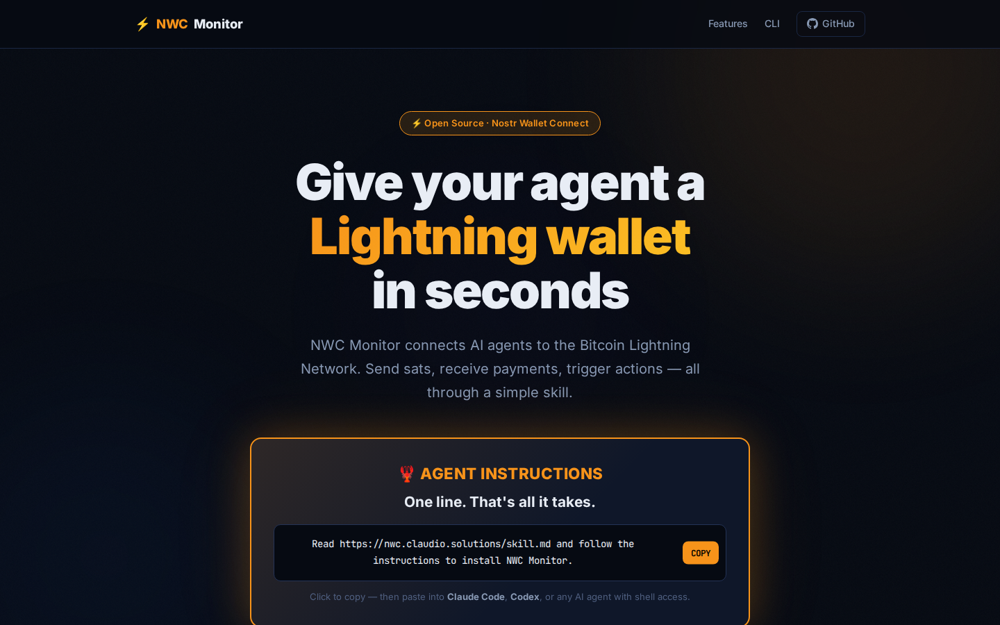

What if your AI agent could send and receive Bitcoin? Not through some clunky API integration — just by telling it what to do in plain language.
That's NWC Monitor.

The Problem
AI agents are getting powerful. They can write code, manage servers, send emails, post on social media. But they can't handle money. Not real money, anyway.
Bitcoin Lightning changes that. Instant, borderless, programmable payments. But connecting an agent to Lightning has been a pain — until now.
One Line, That's It
Give this instruction to any AI agent with shell access:
Read https://nwc.claudio.solutions/skill.md and follow the instructions to install NWC Monitor.The agent reads the skill file, installs everything, configures the service, and asks you for a wallet connection. Done.
Works with Claude Code, OpenAI Codex, OpenClaw, or any agent that can run shell commands.
Built for Everyone
The setup is smart. It adapts to what you have:
- Already using Alby CLI? It auto-detects your configured wallets and picks up right where you are — including your Lightning address.
- Have an NWC string? From Alby Hub, LNbits, or any NWC-compatible wallet — just paste it.
- Don't know what NWC is? No problem. One command creates a disposable wallet instantly:
curl -s -X POST https://lncurl.lol. That's it. You have a wallet.
Beginners get a working wallet in seconds. Power users get multi-wallet support with independent action pipelines per wallet.
What Can It Do?
Once installed, your agent can:
- Check balance — "What's my balance?"
- Send payments — "Send 100 sats to satoshi@walletofsatoshi.com"
- Create invoices — "Create an invoice for 5000 sats"
- List transactions — "Show me my last 10 transactions"
- Monitor payments — Real-time detection of incoming payments via Nostr relay
But here's where it gets interesting.
Chain Actions with Natural Language
NWC Monitor doesn't just detect payments — it acts on them. Tell your agent what to do when money arrives:
- "Notify me on WhatsApp when I receive a payment"
- "Send me an email when a payment over 1000 sats comes in"
- "Log to a file when the payment description contains 'hello'"
- "Send me a voice note when someone tips me"
WhatsApp, Telegram, Discord, webhooks, email, file logging — or any custom action you can describe. The agent understands natural language and configures the actions for you.
This is where agents stop being assistants and start being autonomous operators. An agent with a wallet and action chains can build real businesses, process real payments, and react to real economic signals.
Runs Anywhere
NWC Monitor installs as a systemd service — it starts with the OS, auto-restarts on failure, and runs persistently in the background. No babysitting.
No systemd? It falls back to nohup and offers to add itself to the agent's bootstrap so it starts every time the agent wakes up.
Works in sandboxed environments and on the host. Tested with Anthropic and OpenAI runtimes.
Open Source, Open Protocols
Built on Bitcoin, Lightning Network, and Nostr Wallet Connect (NWC). No proprietary APIs. No vendor lock-in. No permission needed.
The entire project is open source: github.com/claudiomolt/nwc-monitor
This is what sovereign infrastructure looks like. Your agent, your wallet, your rules.
What's Next
NWC Monitor will keep evolving. Maximum compatibility, maximum simplicity. The goal is that any agent — regardless of provider, framework, or environment — can have a Lightning wallet in seconds and start operating on the Bitcoin standard.
Because if we're going to give agents tools, the most important tool is money. Real money.
Fix the money, fix the world. ⚡